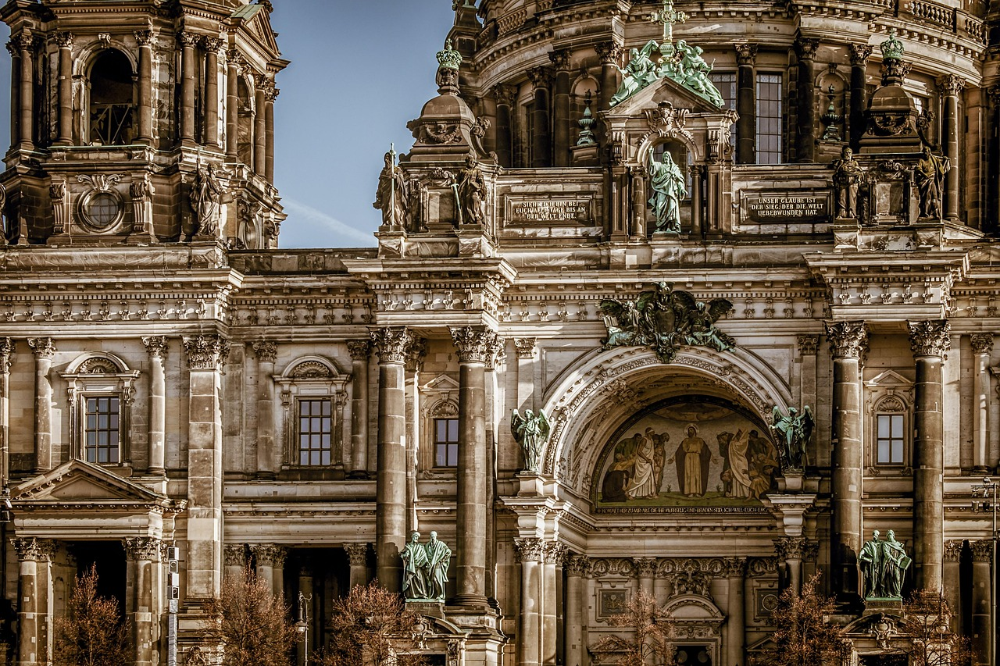
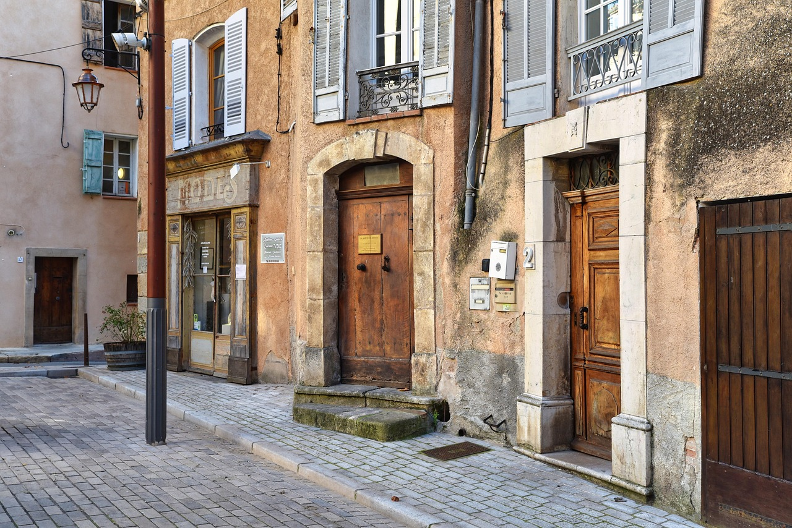
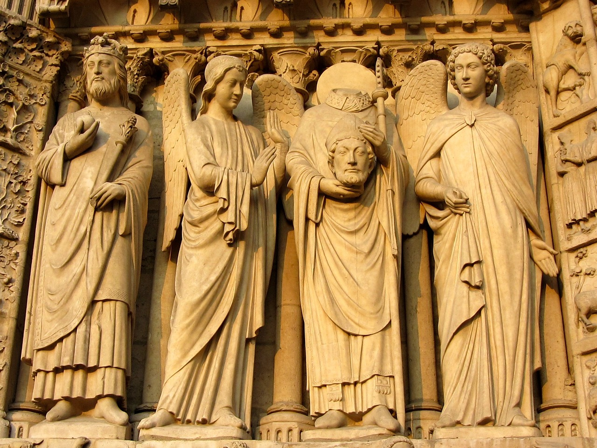
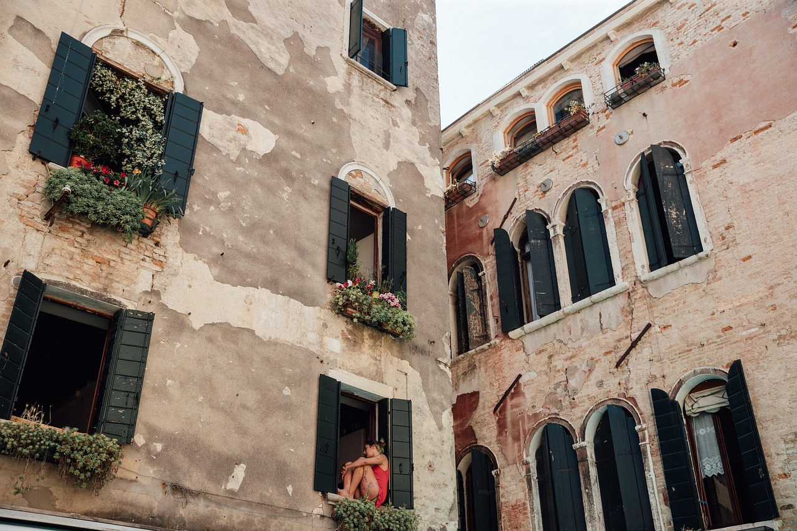

Grécia |
Roma |
Geral |
|
Sobre |
Referências |
|||||||||||||||||||||||||||||||||||||||||||||||||||

|
|
SobreGrécia Antiga é a época da história grega que se estende do século XX ao século I a.C.Quando falamos em Grécia Antiga não estamos nos referindo a um país unificado e sim num conjunto de cidades independentes que compartilhavam a língua, costumes e algumas leis. Muitas delas foram até inimigas entre si como foi o caso de Atenas e Esparta. |
|
PolíticaDurante o Período Clássico, os gregos cultivavam a beleza e a virtude por meiodas artes, acreditando que isso formaria cidadãos conscientes e capazes de contribuir para o bem comum. Dessa mentalidade surgiu a democracia, sistema em que o povo participava diretamente das decisões políticas — especialmente em Atenas, onde os homens livres discutiam questões públicas nas praças, ao contrário de impérios como o Egípcio, onde o poder era centralizado em figuras divinas. |
 |
|  |
Sociedade
Cada cidade-estado (polis) grega possuía sua própria estrutura social. Atenas, por exemplo, admitia a escravidão, enquanto Esparta possuía servos estatais. Ambas eram governadas por uma oligarquia rural. Em Atenas, apenas os nascidos na cidade eram considerados cidadãos; estrangeiros residentes, chamados metecos, não tinham direitos políticos. |
EconomiaA economia grega se baseava na agricultura, no artesanato e no comércio.Produziam itens de couro, metal e tecido com processos trabalhosos. Os principais cultivos incluíam trigo, uvas e azeitonas, além da criação de pequenos animais. O comércio era intenso, tanto local quanto entre cidades do Mediterrâneo, e utilizava-se a moeda chamada dracma. |
 |
|  |
Religião
A religião grega era politeísta, com deuses, semideuses e heróis que influenciavam todos os aspectos da vida. Os mitos ensinavam valores morais e justificavam ações sociais e políticas. Os gregos consultavam oráculos, como o de Delfos, para obter respostas dos deuses por meio de sacerdotisas e sacerdotes intérpretes. |
CulturaA cultura grega era profundamente ligada à religião. A literatura, música e o teatro representavamfeitos de heróis e deuses. O teatro era popular, com tragédias e comédias encenadas em espaços públicos. A música era presente em rituais e eventos sociais. Os esportes também eram valorizados, com destaque para os Jogos Olímpicos, iniciados em 776 a.C. em Olímpia, como forma de unir as cidades em tempos de paz. |

|
|
|